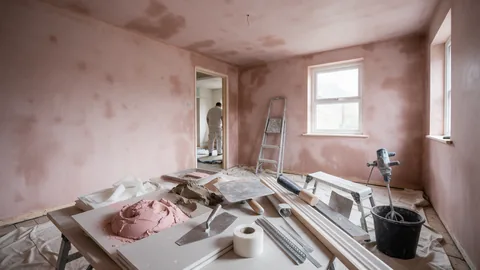

Generated photo
Generated photoGenerated for this demo. Not a photograph of a real job.
Ceilings do not usually fail suddenly. They give you warning, and the warning is readable if you know what you are looking at. Here are the four things a ceiling does before it lets go, and what each one is actually saying.
How to read your own ceiling
Stand in the doorway rather than under it and look across the ceiling rather than up at it. A sag shows far better in raking light from the side than in the glare of the light fitting. Then, from the edge of the room, press gently with the flat of your hand somewhere away from the bulge. Firm and unmoving is good. A ceiling that gives slightly and springs back has lost some of its grip.
Tap it, lightly. Solid and dull means the plaster is holding on. Hollow means it is not. On a lath and plaster ceiling you can sometimes hear the difference between one joist bay and the next, which tells you how far the problem goes.
Then go and look in the loft if there is one above, or ask whoever is upstairs what is on that patch of floor. Half the ceiling problems in a house are explained in thirty seconds from the other side.
The one that will not wait
Wet. A ceiling that is wet and sagging is carrying water as well as plaster, and water is heavier than people expect. That is the one where everything else stops: water off at the stopcock, electrics off to that room at the consumer unit, everybody out from underneath, door shut. Then find the leak, which is a plumber or a roofer rather than a plasterer.
What not to do is stand under the bulge and poke it to let the water out. If it is going to come down, that is when, and it comes down on whoever is holding the broom. If it genuinely has to be released, it gets done from the side of the room with the floor sheeted.
Dry and old is serious but not tonight
A wide gentle bulge on an old ceiling with no water anywhere near it is almost always lath and plaster that has lost its key. It has probably been very slowly getting worse for years. It is not going to come down in the next hour, and it is not getting better either, so it is a this month job rather than a tonight job.
The thing that pushes it over is weight and vibration: somebody storing boxes on the loft boards above, a new bathroom going in upstairs, or a door that slams. If you have a ceiling like that, stop using the loft above it for storage until it is sorted.
Patch, overboard or down
Three answers and the ceiling picks one. A small sound area that has been damaged gets cut out square and pieced in, taped and skimmed, and nobody will ever find it. An old ceiling that is tired but still keyed can often be overboarded: new plasterboard screwed through into the joists above, then skimmed, which keeps the mess down enormously.
Where an area has already let go, down is usually the honest answer. The rest of that ceiling is the same age, was mixed on the same day and has been through the same century, so patching it tends to be the first of several visits. Down, reboarded and skimmed is more mess once and then done. Any plasterer should be willing to tell you which of the three yours is, and why, after tapping it rather than after looking at it from the door.
What about the crack?
Hairline cracks along the wall and ceiling junction are extremely common and are usually nothing: two different materials meeting and moving slightly differently. That is exactly the junction that coving exists to hide.
What is worth a second look is a crack in the middle of a ceiling that keeps opening after it has been filled, one that runs dead straight along a board joint, or one with a step in it where one side sits lower than the other. Those are movement rather than decoration, and plastering over them resets the clock without fixing anything.
The quick version
Wet and sagging: urgent, water off, electrics off, nobody underneath, leak first. Dry wide bulge on an old ceiling: lath and plaster losing its key, get it looked at this month and keep weight off the loft above. Nail heads in a line: fixings pulling, often fixable without taking the ceiling down. A crack that keeps coming back: something is moving, and that wants sorting before anybody plasters it again.
Written for this demo from general trade knowledge. It is not advice on your property, and anything structural, anything wet or anything that might be an older textured coating wants somebody looking at the actual house.
More advice
While you are here.

Generated photoHow long new plaster takes to dry before painting
Why the calendar is the wrong guide, what the colour is telling you, and why the first coat of paint is not a normal coat of paint.
 Generated photo
Generated photoArtex: skim over or remove?
Two honest options, one thing that must be tested before anybody touches it, and the job nobody should do on a guess.
Want somebody to look at the actual walls?
Tell us which rooms and your postcode. Twenty minutes with a knuckle and a straight edge beats any article.